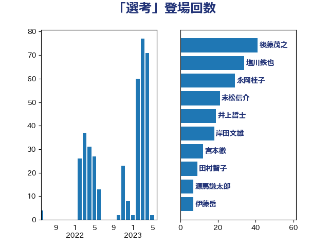

単語「選考」

| 後藤茂之 | 自由民主党 | 41 回 |
| 塩川鉄也 | 日本共産党 | 34 回 |
| 永岡桂子 | 自由民主党 | 29 回 |
| 末松信介 | 自由民主党 | 21 回 |
| 井上哲士 | 日本共産党 | 19 回 |
| 岸田文雄 | 自由民主党 | 18 回 |
| 宮本徹 | 日本共産党 | 12 回 |
| 田村智子 | 日本共産党 | 9 回 |
| 源馬謙太郎 | 立憲民主党 | 7 回 |
| 伊藤岳 | 日本共産党 | 7 回 |
| 吉川元 | 立憲民主党 | 5 回 |
| 高市早苗 | 自由民主党 | 4 回 |
| 青木愛 | 立憲民主党 | 4 回 |
| 熊谷裕人 | 立憲民主党 | 3 回 |
| 松本剛明 | 自由民主党 | 3 回 |
| 金子恭之 | 自由民主党 | 2 回 |
| 福島伸享 | 無所属 | 2 回 |
| 田畑裕明 | 自由民主党 | 2 回 |
| 池田佳隆 | 自由民主党 | 2 回 |
| 横山信一 | 公明党 | 2 回 |
| 杉田水脈 | 自由民主党 | 2 回 |
| 平将明 | 自由民主党 | 2 回 |
| 上田清司 | 国民民主党 | 2 回 |
| 高野光二郎 | 自由民主党 | 1 回 |
| 高良鉄美 | 無所属 | 1 回 |
| 高木かおり | 日本維新の会 | 1 回 |
| 青島健太 | 日本維新の会 | 1 回 |
| 長友慎治 | 国民民主党 | 1 回 |
| 鈴木俊一 | 自由民主党 | 1 回 |
| 野田聖子 | 自由民主党 | 1 回 |
| 道下大樹 | 立憲民主党 | 1 回 |
| 谷川とむ | 自由民主党 | 1 回 |
| 西村康稔 | 自由民主党 | 1 回 |
| 西岡秀子 | 国民民主党 | 1 回 |
| 藤巻健太 | 日本維新の会 | 1 回 |
| 荒井優 | 立憲民主党 | 1 回 |
| 若宮健嗣 | 自由民主党 | 1 回 |
| 舩後靖彦 | れいわ新選組 | 1 回 |
| 秋野公造 | 公明党 | 1 回 |
| 石原正敬 | 自由民主党 | 1 回 |
| 石井苗子 | 日本維新の会 | 1 回 |
| 片山大介 | 日本維新の会 | 1 回 |
| 浜田聡 | NHK党 | 1 回 |
| 河野太郎 | 自由民主党 | 1 回 |
| 河西宏一 | 公明党 | 1 回 |
| 武井俊輔 | 自由民主党 | 1 回 |
| 森本真治 | 立憲民主党 | 1 回 |
| 森屋隆 | 立憲民主党 | 1 回 |
| 松野博一 | 自由民主党 | 1 回 |
| 掘井健智 | 日本維新の会 | 1 回 |
| 平林晃 | 公明党 | 1 回 |
| 小池晃 | 日本共産党 | 1 回 |
| 小林鷹之 | 自由民主党 | 1 回 |
| 守島正 | 日本維新の会 | 1 回 |
| 堤かなめ | 立憲民主党 | 1 回 |
| 吉田とも代 | 日本維新の会 | 1 回 |
| 古賀千景 | 立憲民主党 | 1 回 |
| 古川禎久 | 自由民主党 | 1 回 |
| 加藤勝信 | 自由民主党 | 1 回 |
| 伊藤孝江 | 公明党 | 1 回 |
| 伊藤孝恵 | 国民民主党 | 1 回 |
| 伊波洋一 | 無所属 | 1 回 |
| 井上貴博 | 自由民主党 | 1 回 |